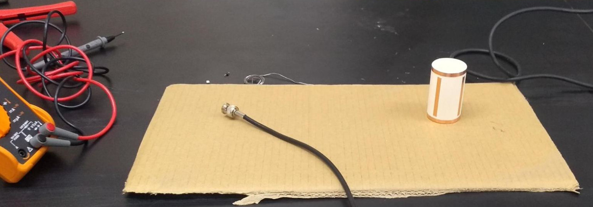
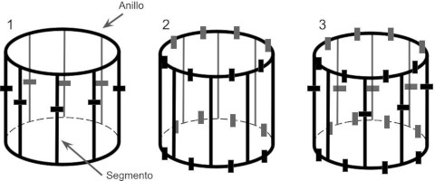
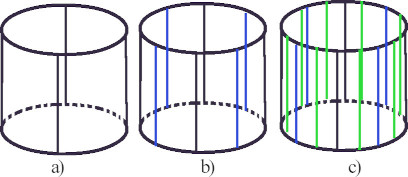
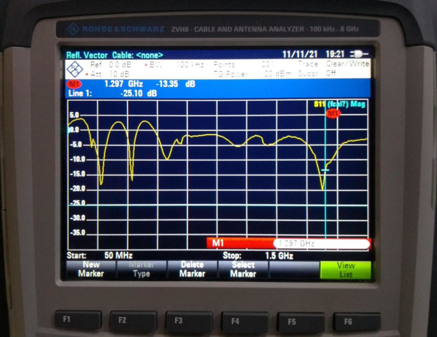

Introducción
Las antenas RF juegan un papel fundamental en la adquisición y calidad de imágenes por resonancia magnética (IRM) en sistemas clínicos y preclínicos. El desarrollo de configuraciones novedosas y convencionales de antenas RF permite el estudio de enfermedades en modelos animales que posteriormente se pueden extrapolar en imágenes por resonancia magnética de humanos.
El propósito principal de las antenas de radiofrecuencia (RF) en resonancia magnética es suministrar la energía necesaria a un sistema de espines que se encuentra sometido a un campo magnético (B0) muy intenso y estático, provocando así un cambio en su nivel energético. El campo producido por la antena (B1) es rotatorio, homogéneo e intenso y es aplicado en la dirección transversal del campo magnético principal B0.
Cuando cesa la aplicación del B1, los espines retornan a su estado de equilibrio, momento en el cual se emite la señal de resonancia magnética que permite la generación de una imagen. Entre las características fundamentales de estas antenas se encuentran su capacidad para generar un campo uniforme, lo que posibilita la excitación de todo el conjunto de espines con un solo pulso de RF; el CSR o cociente señal a ruido, que indica la relación entre la señal (intensidad del píxel) y el ruido de fondo; y finalmente, el SAR o coeficiente de absorción específica, el cual cuantifica la cantidad de energía depositada en la muestra.
La antena birdcage puede ser utilizada como dispositivo de baja, alta o pasa frecuencias. Estas configuraciones estándar son empleadas en los sistemas de generación de imagen por su buen desempeño
Metodología
La calidad de la imagen por resonancia magnética se ve beneficiada por la implementación de altos campos magnéticos, sin embargo, se pueden crear artefactos debido a dos principales causas: la longitud de onda y la geometría de la antena RF. Como ya se mencionó, en la resonancia magnética preclínica, la longitud de onda no es una preocupación importante, ya que el tamaño del objeto bajo estudio suele ser mucho más pequeño que la longitud de onda de RF, por lo que la uniformidad depende de la geometría y distribución de corrientes eléctricas en la antena RF. La geometría de la antena RF modifica la distribución de corriente superficial y el campo B1 generado, por lo que el diseño, construcción y verificación de las antenas es fundamental para garantizar un estudio útil, asegurando que las imágenes preclínicas sean de alta calidad. El desarrollo de configuraciones novedosas y convencionales de antenas RF se vuelve un paso crucial y de reciente auge en resonancia magnética, desde la selección de la geometría y las características eléctricas para poseer un buen CSR, hasta generar un campo uniforme en el volumen de interés.
- Requisitos del sistema: Antes de comenzar el diseño, es fundamental comprender los requisitos del sistema de resonancia magnética. Esto implica conocer la frecuencia de operación deseada, el campo magnético del equipo IRM, la anatomía o región anatómica a estudiar y los requisitos de imagen específicos. La frecuencia de Larmor nos indicará la frecuencia de operación deseada.
- Modelado y simulación: Utilizamos herramientas de modelado y simulación para diseñar la geometría de la antena RF. Esto implica software especializado que nos permite simular y visualizar el comportamiento de la antena RF en términos de distribución de campo magnético, homogeneidad y eficiencia. Con ayuda del software CST microwave studio se generaron los campos electromagnéticos.
- Selección de materiales: Seleccionamos cuidadosamente los materiales para la construcción de la antena. Los materiales deben ser compatibles con la resonancia magnética, minimizar la absorción de energía y maximizar la eficiencia de transmisión y recepción de la señal de radiofrecuencia.
- Optimización de la geometría: A través de técnicas de diseño asistido por computadora, ajustamos la geometría de la antena para lograr una distribución óptima del campo magnético en el área de interés. Esto implica la determinación de la forma, tamaño y disposición de los elementos de la antena. Con los resultados de las simulaciones, se pudo constatar que las antenas de forma teórica fueron sintonizadas a la frecuencia de Larmor y con la impedancia adecuada.
- Prototipado y pruebas: Una vez completado el diseño, procedemos a la construcción de un prototipo de la antena. Posteriormente, realizamos pruebas experimentales para evaluar su desempeño. Estas pruebas pueden incluir mediciones de homogeneidad del campo, eficiencia de transmisión y recepción de señal, así como pruebas de compatibilidad electromagnética
- Ajustes y refinamientos: En base a los resultados de las pruebas, realizamos ajustes y refinamientos en el diseño para mejorar el rendimiento de la antena. Este proceso puede implicar cambios en la geometría, materiales o disposición de elementos.
- Validación clínica: Finalmente, la antena diseñada se somete a pruebas clínicas para verificar su funcionamiento en un entorno real de resonancia magnética, asegurándonos de que cumple con los estándares de calidad y proporciona imágenes de alta calidad. Las primeras imágenes nos indican que el diseño funciona aunque aún existen cosas que se pueden mejorar.
En resumen, la metodología en el diseño de antenas de radiofrecuencia para resonancia magnética implica un enfoque iterativo y multidisciplinario que combina modelado, simulación, pruebas experimentales y ajustes para garantizar un rendimiento óptimo y una alta calidad de imagen en aplicaciones de IRM. Para comparar los desempeños de las antenas se trabajó en el diseño de una antena tipo Birdcage
La antena de volumen tipo Birdcage o Jaula de Pájaro, es capaz de rodear completamente la muestra de interés. Son útiles para campos intensos ya que son capaces de reducir la deposición de energía y conservan tanto la homogeneidad del campo y la sensibilidad de la antena RF. La gran ventaja de estas antenas yace en la uniformidad del campo magnético, sin embargo, presentan un CSR pequeño, esto es debido a la inductancia mutua de los elementos que conforman el arreglo de la antena y la simetría espacial
Materiales Necesarios
- PCB
- Cable Coaxial
-
Capacitores - Conectores (BNC, SMA, SMB)
- Analizador de Redes (VNA)
- Herramientas varias
Proceso de Fabricación
El diseño y construcción de una antena de radiofrecuencia (RF) para imágenes por resonancia magnética (MRI) requiere conocimientos avanzados en electromagnetismo, diseño de circuitos y técnicas de ajuste (impedancia y frecuencia). La medición de parámetros S y el ajuste de impedancia se realiza utilizando un analizador de redes NVA, y se emplean circuitos de sintonización (tuning) y acoplamiento (matching) para el correcto funcionamiento de la antena.
-
Especificaiones iniciales de diseño
Es necesario conocer la intensidad de campo magnético B0, además de las dimensiones del objeto bajo estudio.
- Campo magnético estatíco B0: 7 Tesla.
- Frecuencia de operación: Aproximadamente 300 MHz, basada en la relación giromagnética del protón.
ω = γ * B0
- Dimensiones de la región de interés (por ejemplo cabeza de ratón): Cerebro de ratón (1.5 cm x 1.5 cm x 1.5 cm). 
-
Tipo de antena RF
Existen diferentes tipo de geometrías para estudios de resonancia magnética. Ddependiendo del objeto a estudiar, puede ser tipo superficial, la cuál, se coloca adyacente a la muestra, o de volumen, la cual rodea la muestra. Para este diseño se optara por una antena tipo jaula de pájaro (perico), la cual toma el nombre debido a la similitud que tiene a este objeto.
Antena jaula de pájaro en sus tres configuraciones: pasa bajas frecuencias, pasa altas frecuencias, y pasa banda. -
Diseño de la antena
Determinar el número de elementos de la antena (por ejemplo, 8 o 16 segmentos para un diseño birdcage.
Antena jaula de birdcage de: a) 4 segmentos, b) 8 segemntos y c) 16 segmentos. -
Frecuencia de operación
La frecuencia de resonancia correspondiente a la frecuencia de larmor con el campo estático en que se va a adquirir la señal, se logra ajustar con el uso de capacitores e inductores fijos en la antena o en los puertos (en caso de que la antena esté en cuadratura). Por otra parte el ajuste de impedancia es de importancia y se alcanza con la implementación de un circuito de matching, ya que hace coincidir la impedancia de la antena con el sistema de resonancia magnética, para transferir energía de manera eficiente hacia y desde la antena (es decir, no debe haber reflexiones).
